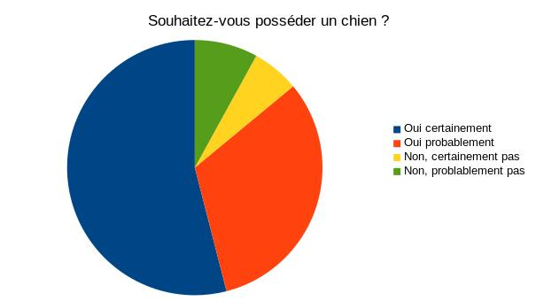

Table des matieres
Un petit peu de musique peut être ?
★ Rock ★
ACDC ~ Highway to Hell
★ Musique relaxante ★
through & through - right now
Une vidéo de chat trop mignons ?
Qui veut une bonne raclette ? (1 pers.)
| Recette d'une raclette pour les nuls | ||||||||||
|---|---|---|---|---|---|---|---|---|---|---|
| Aliment | Fromage 200 g (soit 7 tranches env.) |
Pomme de terre | Charcuterie 2 ou 3 tranches de chaque type |
Cornnichons A volonté |
Oeufs 1 ou 2 (facultatif) |
Lardons 1 cuill. à soupe (facultatifs) |
Légumes selon les goûts |
Salade verte 4 feuilles |
||
| Explications | > Coupé en tranches et fondu à la chaleur > Raclé et coulé sur les pommes de terre |
> A la vapeur ou au four. Maintenir au chaud > Avec la peau ("en robe des champs"). Avec le fromage fondu. |
> Coupée en tranches, sur un plateau En tranches fines, avec les pommes de terre |
> Au vinaigre > A croquer seuls |
> Cuits à la poêle/au poêlon | > Cuits à la poêle au préalable | > Cuits à la vapeur ou crus > Remplacent ou complètent la charcuterie |
> Essorée. Préparer la vinaigrette. | ||
Aimez-vous les chiens ?
